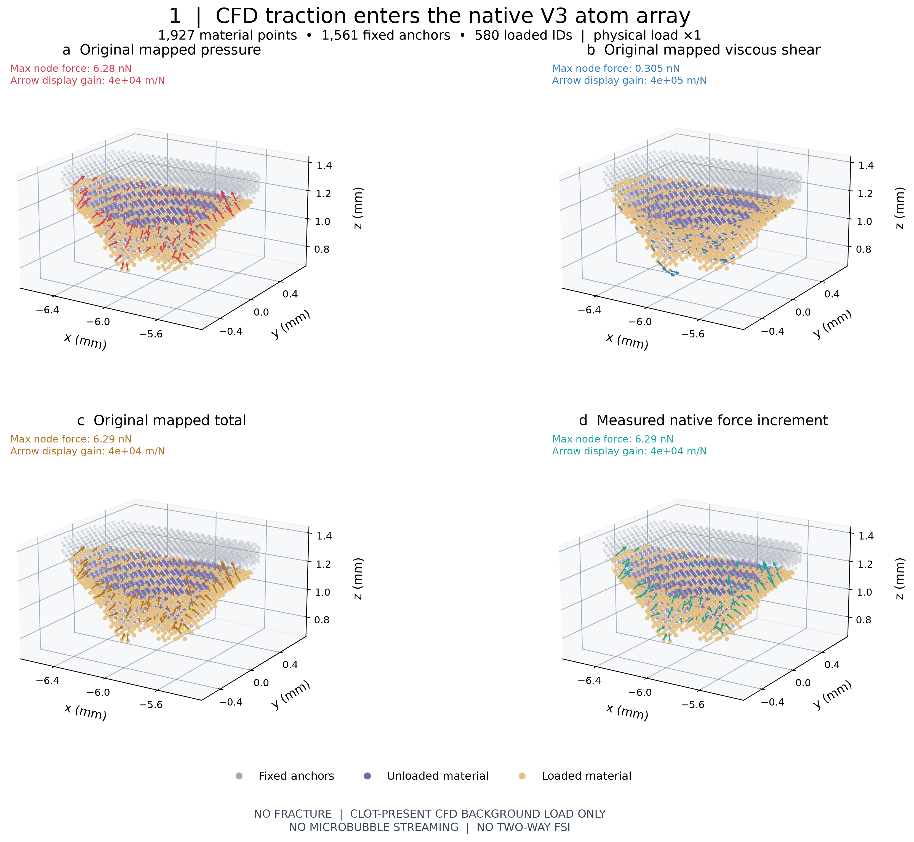
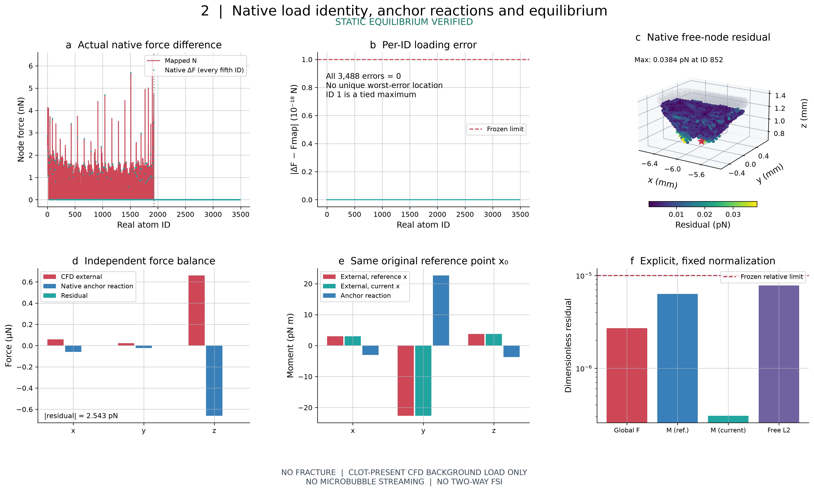
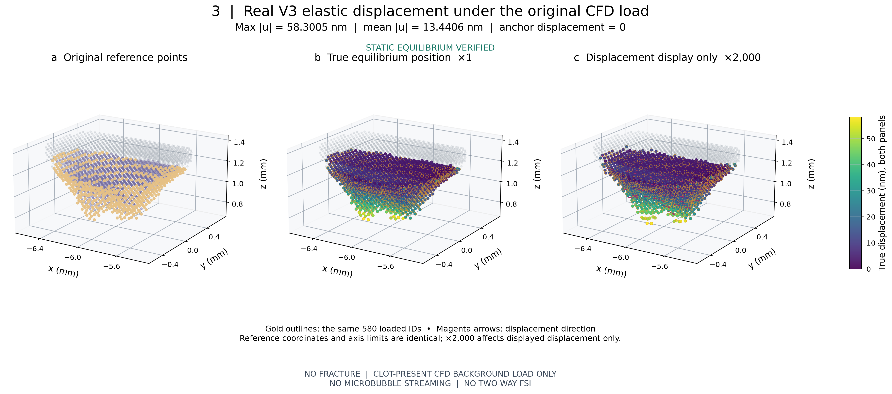
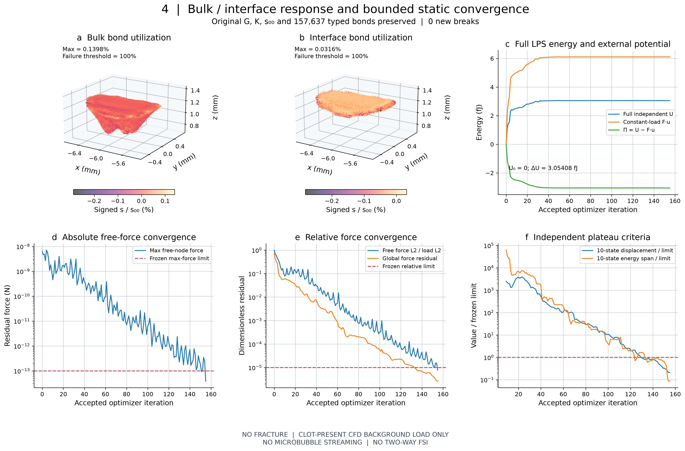

STATIC EQUILIBRIUM VERIFIED · 20261012T185858Z
原载荷 ×1；最大位移 58.3005 nm；无断裂、无微泡声流、非双向 FSI。

All original points shown. Arrows use every seventh loaded ID in increasing ID order (83 arrows); individual physical N values are unchanged. Total includes pressure, shear and viscous normal. Native arrows are measured same-position force differences after actual MPI ownership migration. Arrow gains only affect drawing.
SVG
Anchor reaction is recovered from actual native constrained-DOF internal forces. Reference/current moment conventions use the same frozen x0. Force scale is original surface sum of force magnitudes; moment scale adds the original length scale. Exact zero loading errors are displayed on a linear axis, without artificial floors.
SVG
Actual original V3 discrete point cloud; no medical shell. The true-scale equilibrium view is retained. Auxiliary coordinates are X + 2000u with the same world-coordinate limits; colors always represent unscaled nm. Anchors are fixed in every view.
SVG
Bulk type 1 and interface type 2 are separated; anchor-anchor type 3 is excluded from clot material maps. Every bond midpoint is displayed with critical utilization; values are far below 100%. No fracture or Gc inference. Objective smallness alone is not convergence evidence. Read Figure 2 for separately measured force and moment closure.
SVG